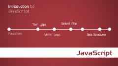

本课程从最基本的概念开始讲起，步步深入，带领大家学习HTML、CSS样式基础知识，了解各种常用标签的意义以及基本用法，后半部分讲解CSS样式代码添加，为后面的案例课程打下基础。
本章节主要讲解html和css样式的关系，以及html标签、html文件结构、head标签,最后讲解了在html中的注释代码的作用。
学完这一章节将对标签的使用有了一些初步的认识，可以使用标签制作出一篇简单的文章网页。下一章节我们将进一步学习另外一部分html标签。
本章节主要讲解列表、div及table标签使用，学完本章，我们可以在网页上展示一些信息列表及表格数据，使网页上的信息更加丰富
本章节主要讲解超链接标签、链接地址及图片标签，学习完这一章节可以把分散的单独的网页用链接
标签有效的组织起来，达到网页之间可以相互跳转的作用。我们每天都在网上冲浪，如果没有表单，人们就无法输入自己的个人信息来买东西，本章节主要从表单的作用、表单元素讲起，学习完本章，可以制出简单的用户登陆、注册页面。
CSS是一个很神奇的东西，设计者可以通过修改样式表的定义而使网页呈现出完全不同的外观。本章就开始带领大家来学习CSS样式：先来认识CSS样式、了解CSS样式的优势、最后讲解CSS代码语法和CSS注释代码。
这一章节主要讲解与CSS样式相关的基础知识：CSS样式的位置及相关的优先级，为后面的CSS样式具体学习打下基础。
CSS选择器
CSS中有一些概念是需要深刻理解的，此节开始将介绍CSS中的一些非常重要的概念包括CSS的继承、层叠和特殊性。
本章将详细介绍网页排版中主要格式化要素，帮助读者把CSS技术与网页编排紧密结合在一起，实现网页实用性与欣赏性相结合，实现出设计效果。
盒模型是CSS布局的基石，它规定了网页元素如何显示以及元素间相互关系。本章将围绕盒模型的概念、结构、尺寸等基础知识展开研究，以便为后面的学习和日后网页设计奠定扎实的基础。
现在可以用所需的知识进行真正设计了，学习完本章节可以运用所学习的知识实现网页的多列布局，本章将围绕流动模型、浮动模型、层布局模型等布局技术展开研究，以便为后面制作复杂的网页打下基础。
虽然CSS文件或者嵌入的CSS都纯文本文件，为了减少css样式代码的编写量，代码缩写是很有必要的。这样可以使用户访问你的网页的时候占用更少的带宽。
本章节对单位如颜色的单位和值等时行详细讲解。
本章节对在日常前端开发中常用到css样式设置小技巧进行了讲解。

本课程让您快速认识JavaScript，熟悉基本语法、窗口交互方法和通过DOM进行网页元素的操作，学会如何编写JS代码，如何运用JavaScript去操作HTML元素和CSS样式，为JavaScript深入学习打下基础。
本章节主要讲解如何在HTML文件中添加JavaScript代码，掌握必备的基础语法，为以后来章学习打下基础。
本章节主要讲解如何向网页中输入内容，如何与浏览器窗口进行交互，通过简单的对象方法就可以轻松实现。
如何用JavaScript去操作HTML元素和CSS样式，实现简单的动态操作。
不断实践，提高技能。
做为WEB攻城师必备技术JavaScript，本课程从如何插入JS代码开始，学习JS基础语法、语法、函数、方法等，让你掌握JS编程思路、知识的使用等，实现运用JS语言为网页增加动态效果，达到与用户交互的目的。
章节主要讲解如何在HTML文件中添加JavaScript代码，引用独立JS文件，学习必要的基础语法，为下一章学习打下基础。
本章节主要讲解变量声明、变量类型，如何对它们进行赋值、改变、计算等一系列操作，掌握不同运算符的使用方法，灵活运用算术运算符、比较运算符、逻辑运算符对变量和数值进行操作。
本章节主要讲解数组的概念，如何创建、赋值、使用数组，如何获得数组长度。
通过本章，掌握控制语句的执行顺序。因为JavaScript程序中的语句一般按出现的顺序执行，有时这样执行不能满足我们的需要，因此大多数编程语言都提供了流程控制语句，控制代码的顺序。
函数是一段JavaScript代码，它只定义一次，可被执行或调用任意次。掌握函数的定义、引用。
javaScript和HTML之间的交互是通过用户和浏览器操作界面引发的事件来处理，本章介绍事件处理的概念，常用触发事件。
了解JavaScript自带一些内置对象，掌握Math、Date、字符基础对象和方法。
介绍浏览器对象中，history,navigator,screen,location等。
过本章学习，掌握如何控制HTML基础元素，如何在文档中选取单独的元素，如何建创、插入和删除元素，并修改样式等。